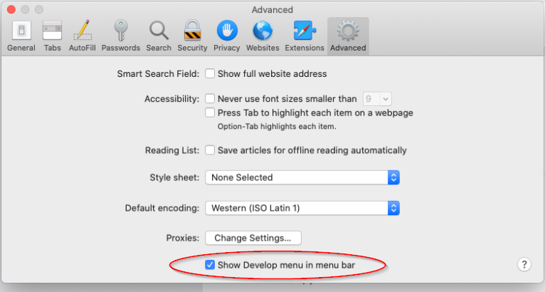
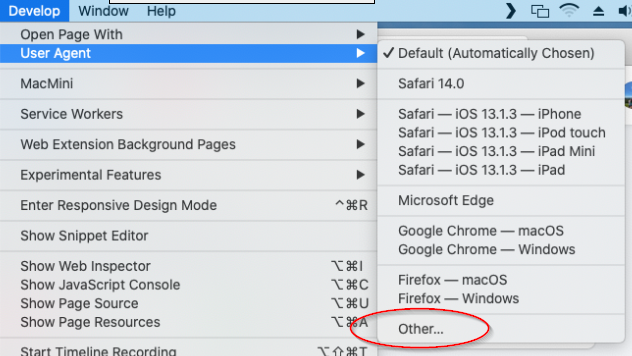
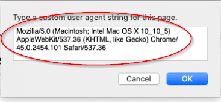
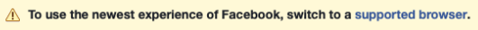

The Old Layout for Facebook extension works for Chrome, Firefox, Edge, and Opera and makes it easy to switch back to the old layout.
But Safari lacks support for the webRequestBlocking API, which is required to make the Old Layout extension work.
So, Old Layout won't work in Safari... but there is a manual work-around!
1. Navigate to Facebook in Safari
2. Go into Safari -> Preferences -> Advanced

Click the checkbox to Show Develop menu in the menu bar, then close Preferences.
3. Go into Develop -> User Agent -> Other

4. Paste the value below into the box and click OK
Mozilla/5.0 (Macintosh; Intel Mac OS X 10_10_5) AppleWebKit/537.36 (KHTML, like Gecko) Chrome/45.0.2454.101 Safari/537.36

Facebook should reload and show the old layout!
5. Ignore the Warning

The warning above will display while you are using the Old Layout. Unfortunately this is unavoidable without more work, so it's best to just leave it there and ignore it.